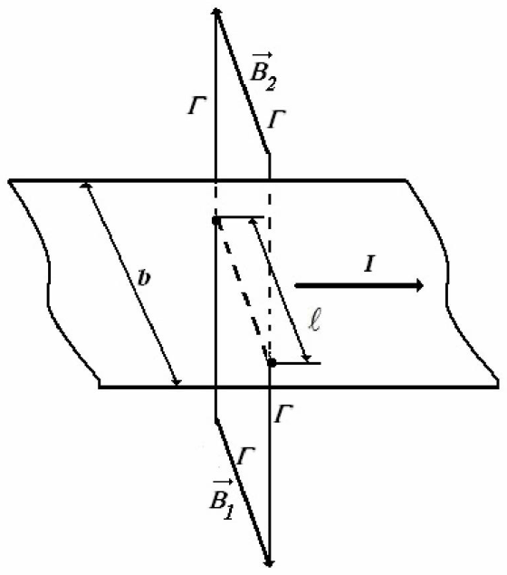
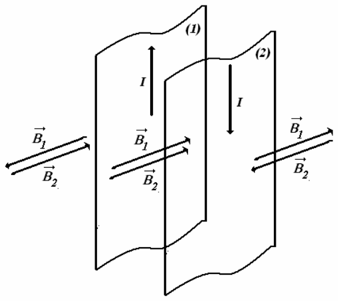
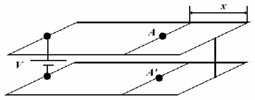

채점 기준(Marking scheme)
올바른 풀이라면 어떤 방법이든 점수를 준다.
0.20 pt$\vec B_{Earth}=B_h\cdot\hat e_x+B_v\cdot\hat e_z$
$B_h$ – 지구 자기장의 수평 성분(horizontal component)
$B_v$ – 지구 자기장의 수직 성분(vertical component)
고리의 면 벡터(surface vector) $\vec S$에 대한 식 0.20 pt
\[\vec S=\pi\cdot R^2\cdot\left(\cos(\omega\cdot t)\cdot\hat e_x+\sin(\omega\cdot t)\cdot\hat e_y\right)\]고리 면을 지나는 지구 자기장의 자기 선속(magnetic flux) $\phi$에 대한 식 0.40 pt
\[\begin{cases}\phi=\vec B_{Earth}\bullet\vec S=\left(B_h\cdot\hat e_x+B_v\cdot\hat e_z\right)\bullet\left(\pi\cdot R^2\cdot\left(\cos(\omega\cdot t)\cdot\hat e_x+\sin(\omega\cdot t)\cdot\hat e_y\right)\right)\\ \phi=B_h\cdot\pi\cdot R^2\cdot\cos(\omega\cdot t)\end{cases}\]고리에 유도되는 기전력(electromotive force)에 대한 식 0.20 pt
\[\begin{cases}E=-\dfrac{d\phi}{dt}\\[3mm] E(t)=B_h\cdot\pi\cdot R^2\cdot\omega\cdot\sin(\omega\cdot t)\end{cases}\]고리를 흐르는 전류의 세기 0.20 pt
\[i(t)=\frac{B_h\cdot s\cdot R\cdot\omega}{2\cdot\rho}\cdot\sin(\omega\cdot t)\]고리 중심에서 유도 자기장의 크기 0.20 pt
\[B_i(t)=\frac{\mu_0\cdot B_h\cdot s\cdot R\cdot\omega}{4R\cdot\rho}\cdot\sin(\omega\cdot t)\]유도 자기장의 시간 평균값 0.20 pt
\[\left\langle\vec B_i\right\rangle=\frac{\mu_0\cdot B_h\cdot s\cdot R\cdot\omega}{8R\cdot\rho}\cdot\hat e_y\]고리 면을 지나는 자기 선속에 대한 식 $\Phi=B_z\cdot\pi\cdot r_0^2+L\cdot I$ 0.40 pt
– 초전도 고리에서 전압 강하는 0이다.
– 고리 안의 자기 선속은 일정하다.
초기 조건 $\begin{cases}z(t=0)=0\\ I(t=0)=0\end{cases}$ $constant=B_0\cdot\pi\cdot r_0^2$
고리를 흐르는 전류의 세기에 대한 식 0.40 pt
\[I=\frac{B_0}{L}\cdot\alpha\cdot\pi\cdot r_0^2\cdot z\]대칭성 때문에 상호작용 힘의 지름 방향 성분은 0이다. 상호작용 힘의 수직 성분은 0.60 pt
\[F_z=-\frac{2\pi^2\cdot\alpha\cdot\beta\cdot B_0^2\cdot r_0^4}{L}\cdot z\]탄성 상수(elastic constant) 0.20 pt
\[k=\frac{2\pi^2\cdot\alpha\cdot\beta\cdot B_0^2\cdot r_0^4}{L}\]고리의 운동 방정식 0.60 pt
\[m\cdot\frac{d^2z}{dt^2}+k\cdot z=-m\cdot g\]고리의 운동 방정식의 일반해 0.40 pt
\[z(t)=A\cdot\cos(\omega\cdot t+\psi)-\frac{m\cdot g}{k}\]초기 조건 0.20 pt
\[\begin{cases}z(0)=0\\ \dot z(0)=v_z(0)=0\end{cases}\](번역 주: 원문의 괄호 배치는 위와 같으나, 초기 조건 $z(0)=0$, $\dot z(0)=0$을 만족하는 해는 $z(t)=\dfrac{mg}{k}\left[\cos\left(\sqrt{k/m}\,t\right)-1\right]$이다. 즉 $-1$은 코사인 바깥에 있는 것으로 읽어야 한다. 2.b의 식도 마찬가지이다.)
관찰:
1. 수직 좌표는 $z\le0$이다.
2. 전류는 항상 같은 방향으로 고리를 흐르며, 진동의 가장 높은 점$(z=0)$에서 최솟값$(I=0)$을 가진다.
3. 전자기력은 항상 위쪽을 향하며, 진동의 가장 높은 점에서 최솟값$(F_m=0)$을 가진다.
전류의 시간 의존성에 대한 식 0.40 pt
\[\begin{cases}I(t)=\dfrac{g\cdot m}{2\pi\cdot\beta\cdot B_0\cdot r_0^2}\cdot\left(\cos\sqrt{\dfrac{2\pi^2\cdot\alpha\cdot\beta\cdot B_0^2\cdot r_0^4}{L\cdot m}}\cdot t-1\right)\\[6mm] I(t)=\dfrac{g\cdot m}{2\pi\cdot\beta\cdot B_0\cdot r_0^2}\cdot\left(\cos\left[\pi\cdot B_0\cdot r_0^2\cdot\sqrt{\dfrac{2\cdot\alpha\cdot\beta}{L\cdot m}}\cdot t-1\right]\right)\end{cases}\]
앙페르 법칙(Ampère's law) 0.30 pt
\[\oint_\Gamma\vec B\cdot d\vec r=\mu_0\cdot\frac{I\cdot\ell}{b}\] \[\begin{cases}B_1\cdot\ell+B_2\cdot\ell=\mu_0\cdot\dfrac{I\cdot\ell}{b}\\[3mm] B_1+B_2=\mu_0\cdot\dfrac{I}{b}\end{cases}\]
키르히호프 제2법칙(Kirchhoff's second law) $V=L\cdot\dfrac{dI}{dt}$ $(R=0,\ C=0)$ 0.30 pt

두 띠 위에서 서로 마주 보는 두 점 사이의 전압 차 $U_{AA'}$는 위치 $x$에서 띠 조립체의 끝까지의 부분에 해당하는 자기 유도 전압(self-induced voltage) 때문에 생긴다. 0.30 pt
\[U_{AA'}=L(x)\cdot\frac{dI}{dt}\]$L(x)$ – 띠 조립체의 끝부분(길이 $x$)을 지나는 자기 선속과 연관된 인덕턴스(inductance)
\[\begin{cases}L(x)=\dfrac{\Phi(x)}{I}\\[3mm] L(x)=\dfrac{B\cdot x\cdot a}{I}\end{cases}\qquad L(x)=\frac{\mu_0\cdot x\cdot a}{b}\]© 채점 기준 작성:
Prof. dr. Delia DAVIDESCU
Conf. univ. dr. Adrian DAFINEI